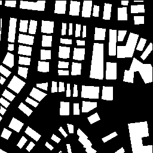
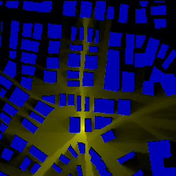
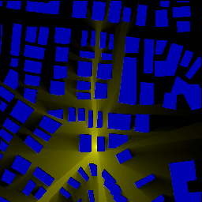
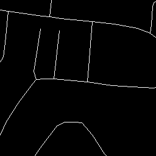
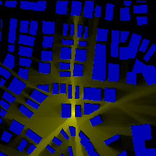
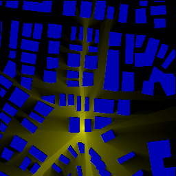
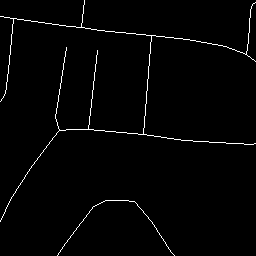

|
RadioMapSeer Dataset

 






- RadioMapSeer Dataset [3GB] Later we released more realistic IRT2/IRT4 simulation datasets (with respect to the IRT datasets of the
RadioMapSeer Dataset) and a 3D IRT2 dataset (IEEE DataPort). Please see our dataset paper for details.

- RadioUNet Code
Dataset paper, citation and more radio map datasets on IEEE DataPort
If you use our dataset, please cite our dataset paper: Ç. Yapar, R. Levie, G. Kutyniok, G. Caire,"Dataset of pathloss and ToA radio maps with localization application" arXiv preprint:2212.11777, Nov. 2022.
@article{DatasetPaper,
url = {https://arxiv.org/abs/2212.11777},
journal={arXiv preprint:2212.11777},
author = {Yapar, {\c{C}}a{\u{g}}kan and Levie, Ron and Kutyniok, Gitta and Caire, Giuseppe},
title = {Dataset of Pathloss and {ToA} Radio Maps With Localization Application},
publisher = {arXiv},
year = {2022}
}
After the release of the RadioMapSeer Dataset, we have generated additional radio map datasets and set them available on IEEE DataPort. If you use any of the datasets, please cite the dataset along with the dataset paper.
@article{DataPort,
url = {https://dx.doi.org/10.21227/0gtx-6v30},
journal={IEEE DataPort},
author = {Yapar, {\c{C}}a{\u{g}}kan and Levie, Ron and Kutyniok, Gitta and Caire, Giuseppe},
title = {Dataset of Pathloss and {ToA} Radio Maps With Localization Application},
note = "\url{https://dx.doi.org/10.21227/0gtx-6v30}",
year = {2022}
}
|